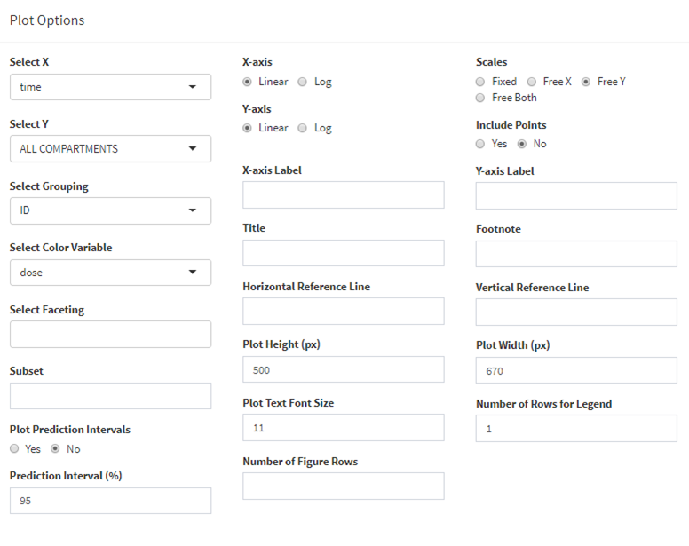
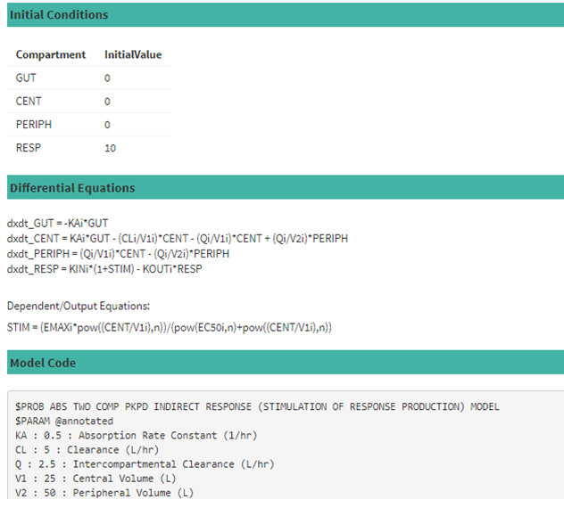

ModVizPop is an interactive and dynamic visualization tool developed for simulating ordinary differential equation based
population pharmacokinetic and pharmacodynamic (PK/PD) models. Availability of a wide array of library PK/PD models, flexibility to
simulate from any ODE based user defined model, customizable plotting features, advanced features to overlay external data, setting a
simulation as a reference, conducting parameter sensitivity analysis, and robust reporting features make ModVizPop an attractive platform to be
leveraged by PK/PD scientists and modelers in their day to day activities. It is primarily programmed in
R and uses key R packages such as tidyverse, mrgsolve,
PKNCA and xtable. It utilizes R Shiny for the web application
framework, LaTeX for PDF report generation,
HTML and CSS for styling graphical
interface.
The user interface consists of a sidebar with several key inputs for performing the simulations.
A tabbed navigation allows the user to visualize the simulated data, plots, PK NCA, model equations and input parameters.
It also provides user the ability to download the underlying model, plots, simulated data, a comprehensive report consisting of all the key inputs and outputs of the simulations,
and a complete simulation session the user works on.
The Help button is a link to ModVizPop documentation with detailed instructions on different components of the interface for running tailored simulations.
Model Selection: This option provides a pop up menu for selecting:

The source selection, via a drop down menu, provides the following sources to choose from:
A custom event input option provides the ability to input complex dosing scenarios by browsing for the file and uploading it. In instances where the user wants to define the complete input dataset, that also can be provided by this option.
Below is an example event dataset with several types of dosing events (not comprehensive).
Note:
If a PKPD library is selected in the Source Selection (also the default selection), the Model Selection provides options for selection of Route, Number of Compartments and PD Model. Route of administration selection includes IV Bolus, IV Infusion and 1st Order Absorption. Number of compartments selection includes One compartment and Two compartment models as options. PD Model selection includes None meant for PK only simulations, Emax, Effect Compartment, Indirect Response I to IV models meant for stimulation/inhibition of factors controlling production/loss of drug response.
Once all the options are chosen in the Model Selection, by clicking Load Model, ModVizPop loads and compiles the model. A progress bar on the bottom right hand corner indicates when the process is complete. Also, the loaded model is shown under the Load Model button to provide user clarity on which model is currently loaded for simulation.
Project Library option in the Source Selection (with in Model Selection tab) lets the user select a model from a repository of PK/PD models. These models are available in the public domain and are developed by pharmacometricians to aid the teams on model informed drug discovery and development decisions.
For User Defined Source Selection, select the *.cpp model file from the local path and select Load Model. It will load the model onto ModVizPop.
Once the model selection is complete, ModVizPop provides an interface to edit fixed and random effects.
Fixed Effects option opens up the fixed effect parameters pop up. For PKPD Library of models, these need to updated to the set of PK/PD parameters for compounds of interest. For example, for the indirect response III model chosen, the following pop up appears for fixed effect parameter selection, which can be modified to the user requirements for simulation:
The units options of the parameters are placeholders for users to note the correct units. They are not programmed to adjust for the specified doses or concentrations automatically. User has to carefully provide the units as ModVizPop is agnostic to these units.
Similarly, Random Effects opens up random effect parameter options.
Dosing options include Dose(s), Duration of Infusion, Number of Doses, Dosing Interval and Dosing Compartment as inputs. Dose(s) input lets the user simulate more than one dose at a time by using comma separated values for the doses. Number of Doses input can be used to simulate a multiple dose scenario. Dosing interval can be customized using the Dosing Interval input. Duration of Infusion option is available when an IV Infusion option is chosen in the Model Selection from the Library of PK/PD models. Duration of Infusion and Dosing Compartment options are both available when a User Defined or Project Library model is chosen. Dosing compartment defaults to 1 but can be modified as per the model requirements.
Simulation options include Start and End Time of the simulation, Timepoints that can be given as an input, an optional Seed and Number of subjects. These options are filled out by default and can be left as such or they can be further modified as per the user requirements. For example, End Time can be extended to simulate the elimination of the drug beyond the default end time of the last dosing interval.
The default time points include a sequence of time points with a step size of 0.25. This step size indicates the smallest time interval between two time points in the simulation and can be modified as necessary. The user can also define new comma separated values or sequences or a combination of these as time points for simulation. Some examples are:
When random effects are turned off using None option, Select Seed will not be available and Select Number of Subjects will default to 1.
Once all the options are selected, clicking Run Simulation on the top options will run the simulation. A progress bar indicates the simulation completion.
There are multiple outputs generated once the simulation is carried out. The tabs on the right side include these outputs.
The first of these tabs is the simulated data. Choose Columns option lets user choose columns that will be visible in the table. A Search option can let one search for existence of any content with in the table. Through the column headers, the users can sort the order of the column contents.
Searchable text boxes are available in the footer of each column to subset the data in the columns. For example:
20.00 ... 20.00 gives out only values equal to 20.00.
15.00 ... 20.00 gives out values between 15.00 and 20.00.
Also, a paged navigation is available on the right hand bottom corner to switch through multiple pages of data.Under the plots tab, two additional options are provided. Plot options is used to customize the plots generated and Plot Simulation button actually plots the data per the options chosen.
Various plot options are available to customize the plots.

PK NCA tab summarizes the non-compartmental analysis for the simulated PK data. The interface provides Calculate NCA button to perform NCA calculations.
Depending on whether it is a single dose or multiple dose, NCA calculated parameters differ. For example, with a single dose, AUC0-inf will be provided.
For multiple dose, first and last dose NCA parameters will be provided (see start and end times). Instead of AUC0-inf, AUC0-tau and Cavg will be estimated. For documentation on how these NCA parameters are calculated, refer to the PKNCA R library documentation.
Note: PK-NCA will not be calculated when:
Model tab lists the initial conditions for the parameters along with the differential equations and any associated equations describing the underlying model. This tab also lists the complete model code for user reference. Below is an example for the PKPD Library Model: PKPDM-ABS-2CMT-IRM3.cpp
The inputs tab lists the values of the dosing events, fixed and random effects parameters of the model and the simulation options for the currently run simulation scenario. When advanced features such as Set As Reference are used, ModVizPop presents the values of both the current simulation and the reference scenarios. Below is an example for the PKPD Library Model: PKPDM-ABS-2CMT-IRM3.cpp
There are several download options once the simulation is run. They include: Simulated Data (.csv), Simulation Plot (.png), Individual NCA results (.csv), NCA Summary (.tab), Model file (.cpp), Report (.pdf) which summarizes all the components and results of the simulation in a comprehensive report. There is also a Session (.zip) download option that can be used to download the complete user session which includes all the plots, model files and individual and summary NCA files generated during the session.
The advanced options tab enables users to:
After performing a simulation and obtaining an output, the user has an option to overlay external data by selecting Overlay External Data option from the advanced options. Subsequently the user can browse and select an input dataset from their local directory. Upon selection of the dataset and running simulation, the uploaded data will be added to the plot as points on top of the simulated lines in the plot.
Additional plotting options Overlay Shape and Overlay Point Size will be available and they can be used to customize the shape and size of the points.
Format rules for input dataset:
ID, time, dose and compartment name(s) are minimum column names needed to overlay data. Column names for compartments should match the exact names as denoted in the plot headers or in the simulated data, which can be downloaded and explored. For example, a two compartment first order absorption external data format is shown below. The compartment names in the dataset are CENTRAL and PERIPHERAL, which are identical to the ones as shown in the plot above.
Note: Data classes should be all numeric in the external dataset. Overlay doesn’t work if there is a character in the dataset to be overlaid.
Following a simulation, the user can set that scenario as a reference by selecting Set As Reference option from the Advanced Options. Subsequently, the user can change any of the values under Fixed Effects, Random Effects, Dosing Options and/or Simulation Options to perform a second simulation. The output will contain both the reference scenario (dotted line) and the latest simulation (solid line) results in all the outputs.
Additional plotting options Reference Linetype and Reference Line Size will be available and they can be used to customize the line type and size of the lines.
On some occasions, it is worthwhile performing a sensitivity analysis by varying the values of a certain parameter and studying how these changes effect the overall output. ModVizPop users can do that by selecting Parameter Sweep option from the Advanced Options. Once selected, the user is asked to select a parameter of interest from the model for which a sensitivity analysis is to be carried out. Once the parameter is selected, the user has an option of providing values of the parameter as a sequence or comma separated values or a combination of these to evaluate the outcome at these different values as shown in the figure.
Note: Selecting Run Simulation and selecting a grouping variable or color variable to be the parameter of interest in the Plot Options helps visualize the results of the sensitivity analysis better.
For any questions, feedback or more information, check out:
ModVizPop Repository on GitHub